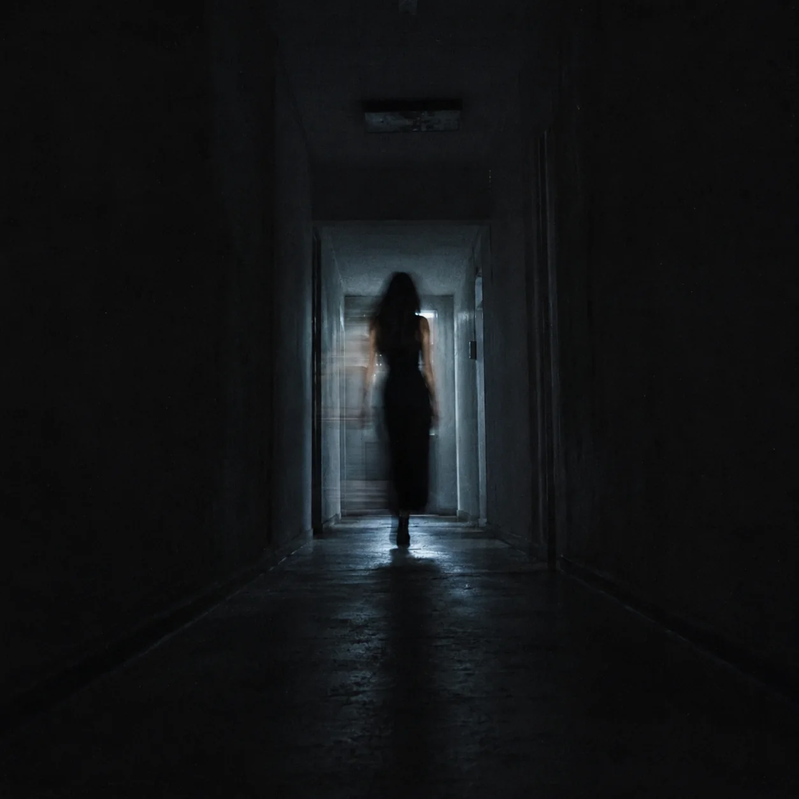

A memória de conversas que atravessavam horas ajudou a definir a textura de proximidade do disco. A voz é mais importante que o rosto em várias faixas.

Encarte virtual · álbum
Toque
Toque
Fantasma
Uma relação mediada por chamadas, telas e distância — e o momento em que a mesma tecnologia que sustentava a intimidade passou a registrar sua ausência.
03 julho 202615 faixasR. J. Wulf
Um vínculo sem corpo
A intimidade precisava de sinal.
Toque Fantasma nasceu de uma experiência afetiva vivida a distância durante um período de isolamento. A relação existia em ligações longas, mensagens, telas, fones, horários improváveis e na sensação estranha de conhecer profundamente uma voz sem dividir com ela o mesmo espaço.
Quando o vínculo desmorona, a tecnologia deixa de ser cenário e vira prova material. Um print, uma chamada que cai, o “digitando” que desaparece, uma foto de perfil, uma música enviada: pequenas interfaces carregam o peso que em outro tipo de relação estaria num quarto, numa chave ou numa porta.
O centro do disco está nesse mecanismo: o que acontece quando presença, desejo e mentira chegam pelo mesmo aparelho. A mediação tecnológica não reduz a intimidade; ela muda a matéria de que a intimidade é feita.
A ausência não fica silenciosa quando o telefone continua sabendo tocar.
Do arquivo de escrita
Curiosidades reais do processo
Uma descoberta feita pela própria interface digital condensou o colapso: o mesmo sistema que sustentava a intimidade também podia registrar a ruptura.
Durante o luto, uma sequência de músicas foi ouvida repetidamente como forma de organizar o que havia acontecido. O álbum herda essa lógica de repetição e retorno.
Arquitetura sonora
Linha telefônica, baixo e madrugada.
O atlas sonoro coloca o álbum entre trip-hop, slowcore, post-punk mínimo e dream-pop seletivo. Breaks em half-time, sub-bass, Rhodes/órgão, delay curto e ruído de linha deixam a produção íntima sem transformá-la em névoa indistinta.
A faixa-título usa a própria telefonia como percussionista: operador, DTMF, sinal de ocupado, clique de conexão. O efeito funciona porque existe um objeto real por trás — não é “glitch” aplicado como decoração.
Regra de som
Telefone e rádio só entram quando a narrativa é realmente mediada por aparelho. A textura tecnológica precisa ter função dramática. O disco pode ser frio sem ser distante: a voz permanece próxima, humana e legível.
Quinze formas de continuar recebendo um sinal
ordem publicadaToque Fantasma
sistemaA telefonia vira estrutura da canção. Menus, sinal e espera externalizam um vício afetivo que a narradora já reconhece enquanto repete.
“Teu amor é uma chamada / que cai antes de entrar.”
Não Me Chama de Louca
provaO disco troca a abstração pela evidência concreta: ver um print e ser convencida a desconfiar da própria leitura. A faixa transforma gaslighting em conflito rítmico e verbal.
Junho, de Novo
dataO calendário funciona como circuito. O mês não é nostalgia decorativa; é a forma que o corpo encontra para reconhecer a reincidência.
Exorcismo Falho
Eu Não Queria
Lockdown
espaçoA impossibilidade de compartilhar espaço físico deixa de ser pano de fundo histórico e passa a controlar a própria ideia de intimidade.
Não Claro
Afeto Não Suportado
Cicatriz Circular
repetiçãoO título resume uma das operações do álbum: retornar ao mesmo ponto sem retornar exatamente igual.
Call Me
Não Se Preocupa
A Última Mentira
Amarração
Mente pra Mim
Morrer de Amor
bônusO bônus amplia o vocabulário do disco sem apagar sua tese: a linguagem romântica extrema é examinada depois que a tecnologia já retirou dela qualquer inocência.
Processo / transformação
Como uma história privada virou gramática eletrônica.
Não contar a história inteira
O disco funciona melhor quando a biografia é distribuída. Uma faixa pode ficar com a chamada; outra, com o print; outra, com o isolamento; outra, com a barganha; outra, apenas com a sensação física de esperar uma resposta. A relação aparece pela soma dos vestígios, não por uma cronologia explicada do começo ao fim.
A tecnologia não é vilã
Também seria simplista dizer que a tela “estragou” a relação. Durante o isolamento, a tela era justamente o lugar onde a relação conseguia existir. Essa ambivalência torna o álbum mais interessante: o aparelho aproxima e denuncia, guarda e apaga, conecta e mantém em espera.

Quando presença e ausência chegam pelo mesmo aparelho, a diferença entre as duas deixa de ser simples.
Distância / sinal
O aparelho aproxima sem eliminar o intervalo.
O vocabulário visual do álbum trabalha com corredor, cabo, tela e reflexo porque a relação nunca chega sem mediação. A tecnologia não é decoração retrofuturista: ela define a matéria do vínculo.
O corredor transforma distância em arquitetura; o sinal converte presença em superfície; o prisma fragmenta uma figura que continua reconhecível. As três imagens repetem, por vias diferentes, a mesma tensão das canções: contato suficiente para criar intimidade, insuficiente para abolir ausência.
No prisma, a figura permanece reconhecível mesmo atravessada por cortes de luz — presença suficiente para vínculo, nunca suficiente para abolir distância.
Créditos
ArtistaAMORFA
Faixas15
Lançamento03 julho 2026
Composição e direçãoR. J. Wulf
Centro sonoroTrip-hop · slowcore · post-punk mínimo · dream-pop seletivo
CatálogoDiscografia →